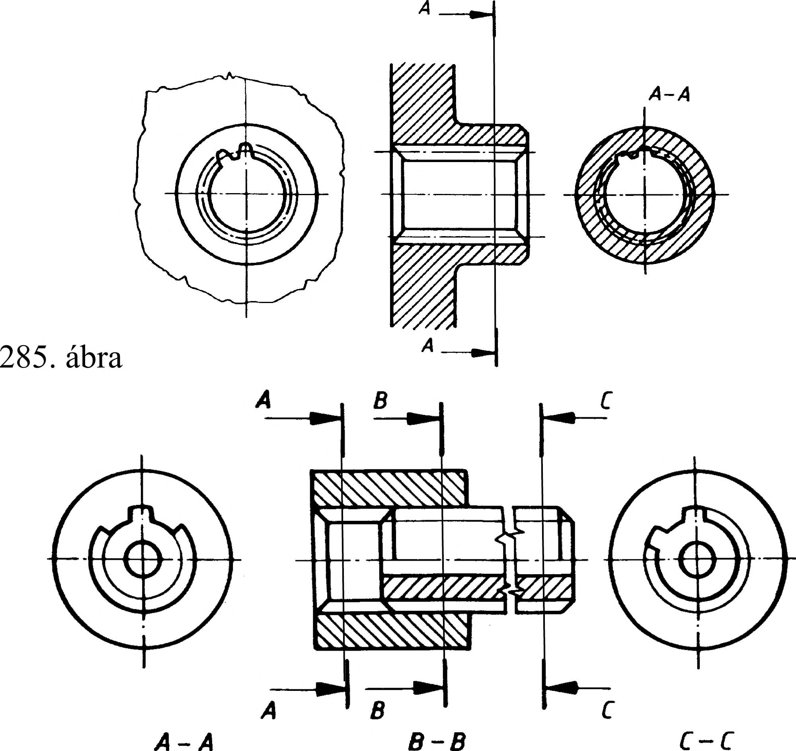

17. Bordás tengelykötés 17.2. Evolvens profilú bordás tengelykötés Az evolvensprofilú bordás tengelykötés elemeinek szabványosított méretei a gyakorlatban a névleges átmérő (D) és a modul (m) függvényében választható meg a fogszám (z), amelyet a terhelés, az elkészíthetőség, az átviendő nyomaték stb. határozhat meg. 17.3. Bordás tengelykötés elemeinek ábrázolása A párhuzamos oldalú bordástengelyt nézetben és metszetben is egyszerűsítve ábrázoljuk. 17.3.1. Bordástengely ábrázolása A bordástengely hossztengelyére merőleges metszetében (vagy nézetében) legalább egy bordát és a szomszédos két hornyot kirajzoljuk, és a fej henger vonalát a bordához kapcsolódóan, folyamatos vastag vonallal rajzoljuk meg. Az éltompítást nem rajzoljuk meg. A lábhengert a kirajzolt fogárok méretétől kezdődően folytonos vékony vonallal kell megrajzolni (281.a ábra). A forgástengellyel párhuzamos nézetben a teljes profilú bordaszakasz végét és a szerszámkifutást, valamint a lábhenger kontúrvonalát folytonos vékony vonallal rajzoljuk. Az evolvensprofilú bordástengely rajzolásakor a hossztengelyre merőleges metszetben (nézeten) egy bordaprofilt együtt kirajzolunk a két szomszédos fogárokkal, és hasonlóan a párhuzamos oldalú bordástengelyhez, a fejhenger kontúrvonalát folytonos vastag vonallal, a lábhenger kontúrvonalát folytonos vékony vonallal rajzoljuk meg. Ezen kívül még meg kell rajzolni vékony pontvonallal az osztóhenger vonalát is (281.b ábra). Ha a bordás tengelyben belső üreget kell megmutatnunk, hosszmetszetet készítünk. A metszeten a bordát nézetben ábrázoljuk (282. ábra). Ha a bordán olyan belső üreget kell megmutatni, ami miatt metszetet kell készíteni, azt kitörésen adjuk meg (283 ábra). Ha a bordák helyzete a megmutatott részlethez képest nem tetszőleges, akkor a kitörésben a tényleges anyaghatárt rajzoljuk, nem a jelképet. 17.3.2. Bordásfurat ábrázolása A bordásfuratot is jelképesen ábrázoljuk. A tengelyirányú metszeten mind a fej-, mind a lábhenger kontúrja folytonos vastag vonal. Erre merőleges metszeten (nézeten) legalább egy profilt és a két szomszédos fogárkot megrajzolunk. Ehhez kapcsolódik a bordázat lábköre ami folytonos vastag vonal, ill. a fejhenger köre, ami folytonos vékony vonal (284. ábra). Evolvensprofilú bordásfurat rajzán vékony pontvonallal az osztóhenger vonalát is megrajzoljuk (285. ábra). 17.3.3. Bordáskötés ábrázolása A bordás tengelykötést tengelyirányú metszeten a tengely egyszerűsített jelképes ábrázolásával, ill. a bordásfurat látható részének folytonos vastagvonalú láb-, ill. fejhengerének kontúrvonalával rajzoljuk. A bordástengely mind a nézeten, mind a metszeten takarja a bordásfuratot, és kapcsolódásukat hézag nélkül ábrázoljuk (286. ábra). 281. ábra b) 282. ábra A-A 284. ábra 80
